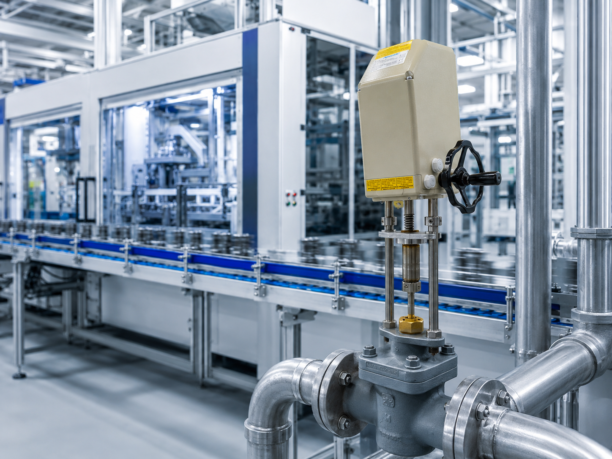
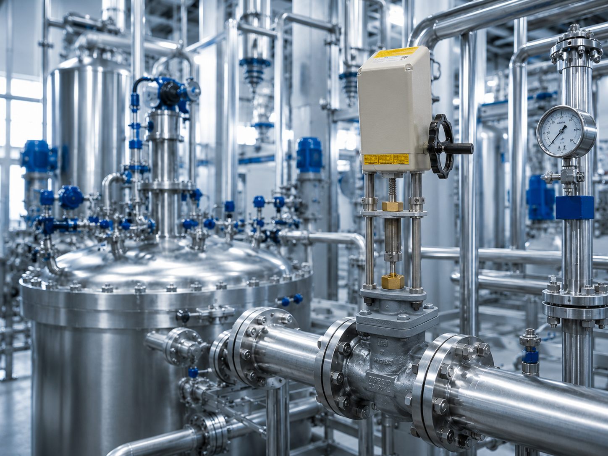
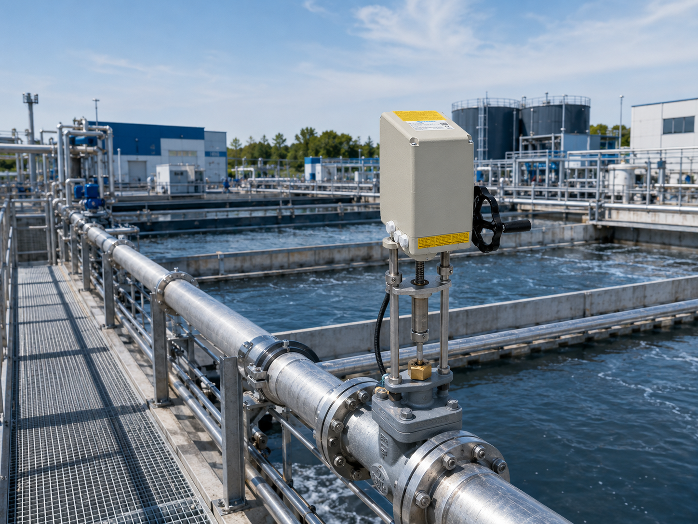
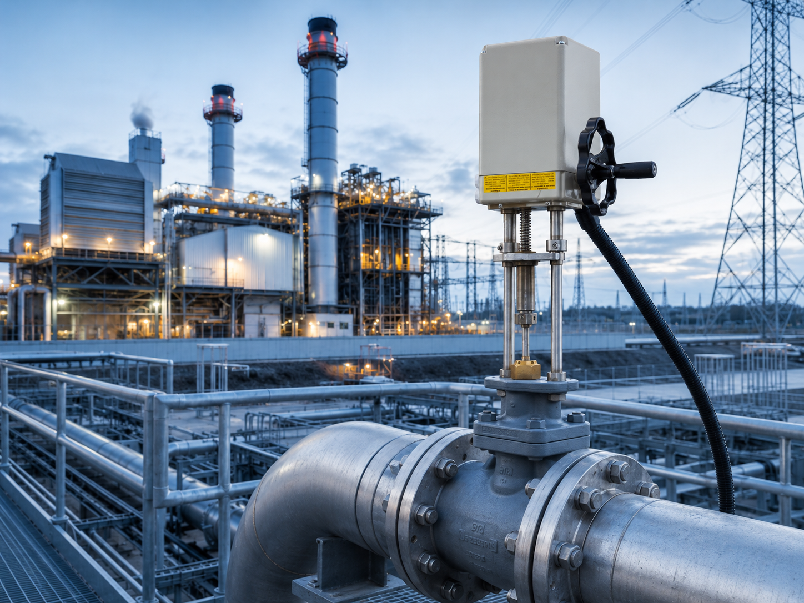

Lösungen für Branchen, in denen Präzision und Ausfallsicherheit zählen.
Unsere Stellantriebe kommen weltweit in unterschiedlichen Industrieumgebungen zum Einsatz – überall dort, wo Prozesse zuverlässig, präzise und langfristig funktionieren müssen.

Zuverlässige Antriebslösungen für unterschiedlichste Maschinen und Anlagen mit hohen Anforderungen an Verfügbarkeit und Funktion.

Zuverlässige Antriebslösungen für Armaturen, Klappen und Prozesse in chemischen Anlagen und verfahrenstechnischen Anwendungen.

Effiziente Steuerung von Armaturen und Prozessen in der Wasserwirtschaft und technischen Infrastruktur.

Zuverlässige Antriebe für kritische Anwendungen in Energieanlagen und Infrastrukturprojekten.
Sprechen Sie mit uns. Wir unterstützen Sie bei der Auswahl der passenden Lösung und beraten Sie kompetent zu technischen Anforderungen, Einsatzbereichen und projektspezifischen Besonderheiten.
Stukenbrocker Weg 38
33813 Oerlinghausen
Telefon: +49 5202 9739 0
E-Mail: info@agromatic.de
Teilen Sie uns kurz Ihre Anwendung, den gewünschten Antriebstyp und besondere Anforderungen mit. So können wir Sie schnell und gezielt unterstützen.